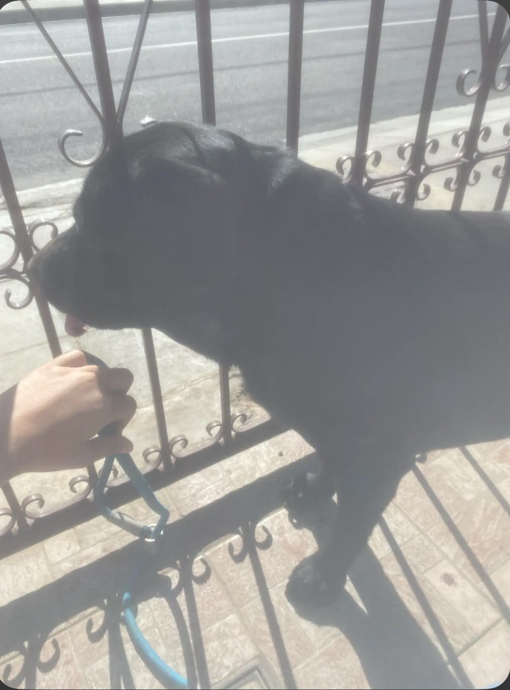

Labrador

- Φυσικά χαρακτηριστικά των Λαμπραντόρ
- Θεωρείται μία μεσαία προς μεγαλόσωμη φυλή.
- Ανάλογα την αναπαραγωγή τους, μπορεί να ζυγίζουν από 22 ως 36 Kgr περίπου.
- Οι σωματικές τους διαστάσεις είναι αρμονικές και υπάρχει ισορροπία μεταξύ του μήκους των ποδιών και της ράχης τους.
- Το κρανίο τους είναι φαρδύ, με απαλή λούτρινη υφή γούνας , τα πτερύγια των αυτιών τους είναι μαλακά και η μόνιμα καλόκαρδη έκφραση τους προσδίδει αυτή την γλυκύτητα στην όψη τους.
- Το σώμα τους είναι δυνατό, μυώδες και καταλήγει σε μία παχιά ουρά, η οποία στενεύει προς το τελείωμα της.
- Το ρύγχος τους φιλοξενεί ένα δυνατό ζευγάρι σιαγόνων, με μία πλήρη σειρά 42 ολόλευκων δοντιών.
- Οι αθλητικές τους ικανότητες
- Τα Λαμπραντόρ είναι πολυτάλαντα και ευκίνητα σκυλιά όπου μπορούν να τρέξουν γρήγορα κοντινές διαδρομές ή να διατηρήσουν ένα σταθερό ρυθμό με μεγάλες δρασκελιές, ώστε να καλύψουν μεγάλες αποστάσεις.
- Για σχετικά μεγαλόσωμη φυλή , είναι ευέλικτα, ικανά να πηδήξουν εμπόδια μεγαλύτερα του ενός μέτρου.
- Το ξεδίπλωμα των ταλέντων τους εξαρτάται από τον τύπο της ομάδας που ανήκουν και αναπαράχθηκαν για κάποιο συγκεκριμένο σκοπό (εκθεσιακή αναπαραγωγή ή σκυλιά εργάτες).
- Το τρίχωμα των Λαμπραντόρ
- Το κοντό, πυκνό και ευκολοκαθάριστο τρίχωμα τους συναντιέται σε 3 χρωματισμούς ( κίτρινο, σοκολατί και μαύρο ) και χρειάζεται λίγη περιποίηση για να λάμψει.
- Η επιφάνεια της γούνας τους είναι γυαλιστερή και με ελάχιστα λιπαρή υφή. Οι τρίχες τους είναι ίσιες, παρόλο που σε κάποιες περιπτώσεις παρατηρείται ένας μικρός κυματισμός στην πλάτη, όταν είναι ενήλικα.
- Το πυκνό υπόστρωμα και το αδιάβροχο άνω μέρος τα κρατάει ζεστά ακόμα και στα πιο ψυχρά κλίματα.
- Μόλις βγουν έξω από την θάλασσα ή την λίμνη που βούτηξαν, αρκεί ένα γρήγορα τίναγμα το σώματος τους για να διώξει το παγωμένο νερό που συσσωρεύθηκε πάνω στην γλιστερή τους γούνα.
- Οι γενετικοί παράγοντες που καθορίζουν το χρώμα της γούνας τους είναι ξεκάθαροι και πιο διακριτοί από κάθε άλλη φυλή σκύλων.
- Όταν αναφερόμαστε στα Λαμπραντόρ δεχόμαστε μόνο 3 χρώματα τριχώματος:
- Κίτρινο , Σοκολατί και Μαύρο.
- Αν και μπορεί να ακούσετε άλλες χρωματικές περιγραφές, όπως το Χρυσό Λαμπραντόρ ή το κοκκινωπό Λαμπραντόρ, όλα αυτά δεν είναι τίποτα άλλο παρά παραλλαγές του βασικού Κίτρινου χρώματος.
- Τα μόνα χρώματα που αναγνωρίζουν τα Kennel τόσο στην Αγγλία όσο και στις ΗΠΑ είναι τα 3 προαναφερθέντα.
- Συνολική αποτίμηση κύριων χαρακτηριστικών
- Το γυαλιστερό αδιάβροχο τρίχωμα , τα μαλακά πτερύγια των αυτιών τους, καθώς και η λούτρινη υφή της ουράς, τους δίνουν εμφάνιση που μοιάζει σχεδόν με αυτή της φώκιας.
- Ειδικά μέσα στο νερό, αυτή η ομοιότητα εντείνεται, διότι εκεί αισθάνονται σαν το σπίτι τους κολυμπώντας χαμηλά μέσα στο νερό, ωθούμενα από τις δυνατές και κατάλληλες για γρήγορο κολύμπι πατούσες τους.
- Ακόμα και στην στεριά όμως, είναι εξίσου δυνατά και η στιλπνή κορμοστασιά τους δίνει την εντύπωση ενός υγιούς και καλογυμνασμένου αθλητή.